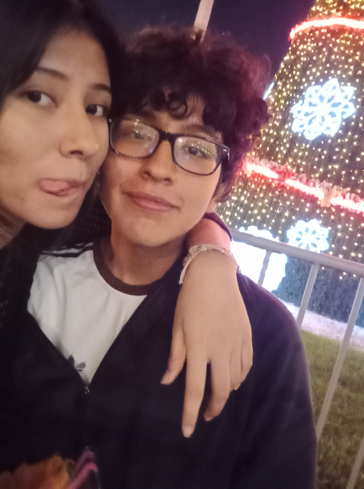
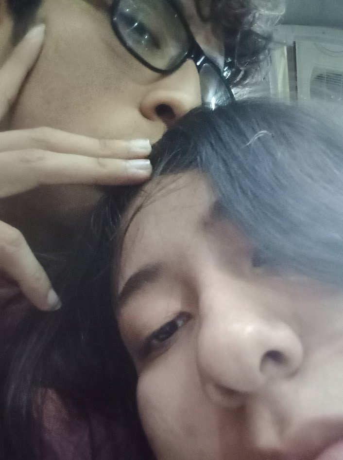

Este amor que tengo hacia a ti mi xio es muy enorme

Te escribí algo especial...

Lo hice con mis propias manitos, quise dibujar un pequeño recuerdo de lo que vivimos. Faltaron muchos más momentos hermosos por plasmar, pero cada trazo está lleno de todo el amor que te tengo. Eres mi mayor inspiración y quiero seguir dibujando nuestra historia juntos, llenándola de colores y sonrisas. Te quelo mucho, muchísimo, más de lo que las palabras pueden expresar ❤️✨

Gachas por llegar a mi vida xiomi te quelo demasiado, es muy bonito pasarla contigo, llenas mis días de una luz especial. Cada momento, cada risa y cada mirada tuya es mi parte favorita del día. Eres mi refugio, mi mayor alegría y la casualidad más hermosa que me pudo pasar. Prometo seguir cuidándote, haciéndote sonreír y demostrándote lo mucho que vales para mí. Eres mi persona ideal, nunca lo olvides. ✨💞